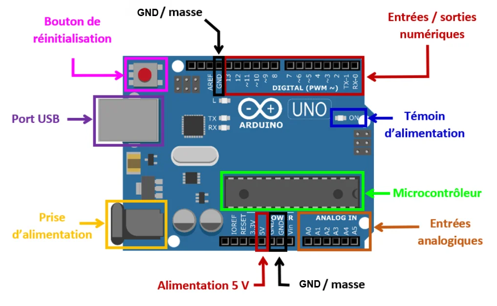
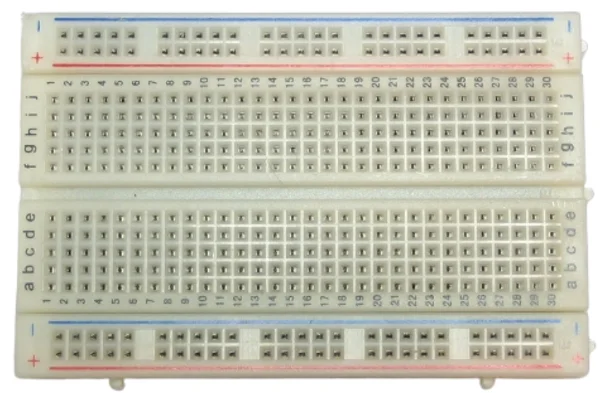
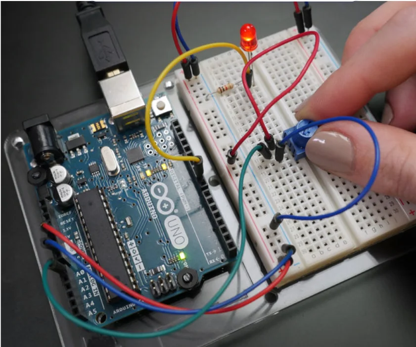
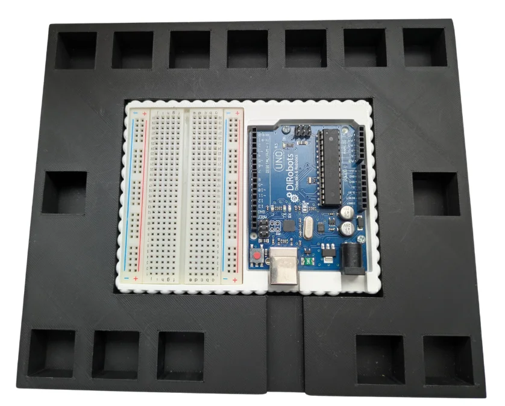

Fiche · Tutoriel
Arduino et câblage
Tout ce qu’il faut savoir pour comprendre ta carte Arduino, monter ton câblage en sécurité et brancher tes composants (LED, boutons, servo-moteur…).
1 · Découverte
Un Arduino
Un Arduino, c’est un petit cerveau électronique. Il ne réfléchit pas comme un ordinateur : il suit les instructions que tu lui donnes, écrites sous forme de programme.
C’est le schéma d’un objet technique automatisé : l’Arduino joue le rôle de la carte programmable.
A · À quoi ça sert ?
- Allumer et éteindre des LED
- Faire bouger des moteurs
- Émettre des sons
- Lire des boutons et des capteurs
- Prendre des décisions simples
B · En détail

- Bouton de réinitialisation (Reset)
- Redémarre le programme de la carte, comme « redémarrer » sur un ordinateur.
- Port USB
- Relie l’Arduino à l’ordinateur : il alimente la carte et sert à envoyer le programme.
- Prise d’alimentation
- Pour brancher une batterie ou un adaptateur secteur, sans ordinateur.
- GND / masse
- Le « − » de l’électricité. Tous les composants doivent y être reliés.
- Entrées / sorties numériques (D2 à D13)
- Broches programmables pour envoyer un signal (LED, servo) ou en recevoir un (bouton). Les broches 0 et 1 ne sont pas à utiliser, sauf cas très précis.
- Témoin d’alimentation (LED ON)
- Petite lumière qui indique que l’Arduino est allumé.
- Microcontrôleur
- Le cerveau de la carte : il lit ton programme et pilote les autres parties.
- Entrées analogiques (A0 à A5)
- Lisent des capteurs précis : température, lumière, potentiomètre.
- Alimentation 3,3 V / 5 V / GND
- 5 V pour la plupart des composants, 3,3 V pour les plus sensibles, GND toujours relié.
2 · Matériel
La platine de test
Une platine de test est un support en plastique plein de petits trous. Elle permet de brancher des composants électroniques sans soudure : parfaite pour tester et monter un circuit temporaire.

Les bandes d’alimentation (sur les côtés)
Marquées + (rouge) et − ou GND (bleu ou noir). Tous les trous d’une même ligne sont reliés entre eux : elles amènent l’électricité (5 V ou 3,3 V d’un côté, GND de l’autre).
La bande du haut et celle du bas ne sont pas reliées entre elles : pense à le faire si tu utilises les deux.
Relie une ligne − au GND de la carte avec un câble Dupont mâle-mâle noir ou marron. Pour la ligne +, relie-la au 5 V (ou 3,3 V si besoin) avec un câble rouge ou blanc.
Dans la plupart des projets de base, la ligne + n’a pas besoin d’être reliée à la carte : seuls certains composants ont besoin d’une alimentation 5 V (le servo-moteur, par exemple).
La zone centrale (grille principale)
Les trous sont reliés en colonnes de 5 (A-B-C-D-E et F-G-H-I-J). Un canal central sépare les deux côtés : idéal pour placer un composant à pattes (LED…) sans que ses deux pattes soient reliées.
3 · Sécurité
Les protocoles
Pour ta sécurité et celle du matériel, suis toujours ces étapes dans l’ordre.
A · Protocole d’installation
- Récupère la platine de test et les composants nécessaires. Fais la liste avant, pour limiter les allers-retours.
- Fais le câblage en respectant le branchement de chaque élément. Sois délicat(e) pour ne pas casser le matériel.
- Vérifie chaque câble et chaque connexion, puis appelle le professeur pour validation.
- Une fois validé (aucun risque pour le matériel), branche la carte à l’ordinateur avec le câble USB.
- Envoie ton programme du distributeur dans la carte depuis l’atelier (voir C), puis teste-le sur ta maquette.
B · Protocole de démontage
- Vide la carte : dans l’atelier, onglet Programmation du carnet, bouton « Vider la carte ».
- Débranche le câble USB, puis déconnecte délicatement tous les câbles et les composants.
- Range la platine de test et tous les composants.
C · Envoyer le programme dans la carte (atelier)
- Ouvre l’atelier avec Chrome ou Edge (l’envoi ne marche pas avec Firefox).
- Branche la carte Arduino à l’ordinateur avec son câble USB.
- Dans l’exercice, à droite, choisis « Dans la carte » (au-dessus du simulateur), puis clique sur « Connecter la carte ». Depuis le carnet, onglet Programmation, le bouton « Envoyer mon programme dans la carte Arduino » t’y emmène directement.
- Dans la fenêtre du navigateur, choisis la carte (souvent « Arduino Uno » ou un nom avec « USB »), puis clique sur « Connexion » :
- La première fois seulement, clique sur « Installer le programme de la carte » : la carte reçoit son programme de base (une dizaine de secondes).
- Clique sur « Envoyer mon programme » et attends « Programme envoyé » sans débrancher le câble.
Pour essayer sans envoyer : choisis « En direct » au lieu de « Dans la carte », puis « Lancer » : ton programme tourne dans l’ordinateur et la maquette obéit tout de suite. Le câble doit rester branché ; si tu fermes l’onglet, tout s’arrête.
À chaque nouvel envoi, le programme qui était dans la carte est remplacé. La carte garde son programme même débranchée : il redémarre dès qu’elle est alimentée.
4 · Matériel
Le câblage
Le câblage fait la liaison entre les composants (capteurs et actionneurs) et la carte programmable, pour transmettre les informations ou les ordres. On utilise des câbles à fiches mâles ou femelles, appelés câbles Dupont.

Le câblage du distributeur
Règle : le câble GND (la masse) est toujours marron ou noir.
Ce sont les mêmes broches que dans les exercices de programmation (et dans l’onglet Câblage du carnet).
| Composant | Rôle | Broche |
|---|
5 · Matériel
Banc de câblage
Pour faciliter le câblage, on peut utiliser un « banc de câblage » : il réunit la carte programmable, la platine de test et des emplacements pour les composants, rangés de façon pratique.

6 · Référence
Les composants
Les composants du distributeur et leur branchement. Clique sur un composant pour voir ou cacher le détail.